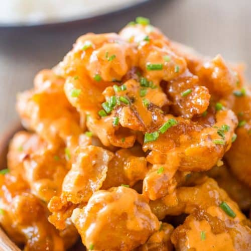

Home
Bang Bang Shrimp

Description:
Bang Bang Shrimp from the Bonefish Grill is crispy, creamy, sweet and spicy with just a few ingredients and tastes just like the most popular appetizer on the menu.
Ingredients:
- 1/2 cup mayonnaise
- 1/4 cup Thai sweet chili sauce
- 1/4 teaspoon Sriracha
- 1 pound shrimp shelled and deveined
- 1/2 cup buttermilk
- 3/4 cup cornstarch
- canola oil for frying
Steps:
- In a small bowl add the mayonnaise, Thai sweet chili sauce and Sriracha and stir.
- In a second bowl add the shrimp and buttermilk and stir to coat all the shrimp.
- Remove from the buttermilk and let excess liquid drain away.
- Coat the shrimp in cornstarch.
- In a heavy bottomed pan add 2-3 inches of canola oil and heat to 375 degrees
- Fry the shrimp until lightly brown, 1-2 minutes on each side.
- Once fried coat with the sauce and serve immediately.